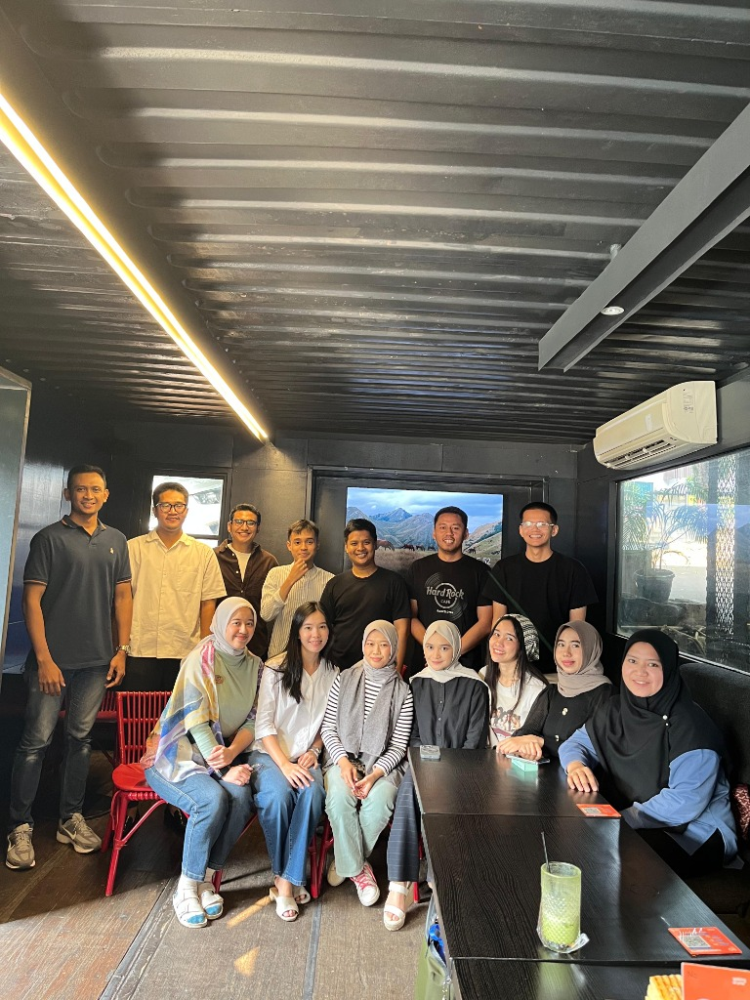
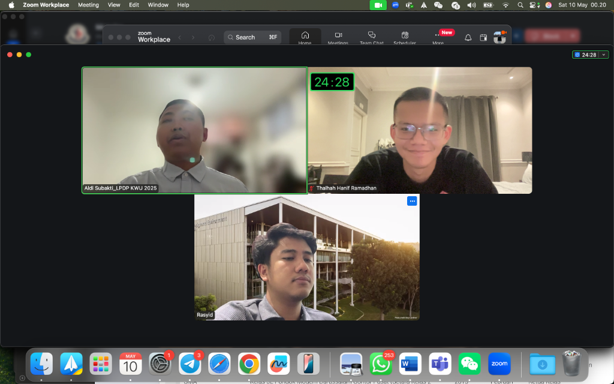
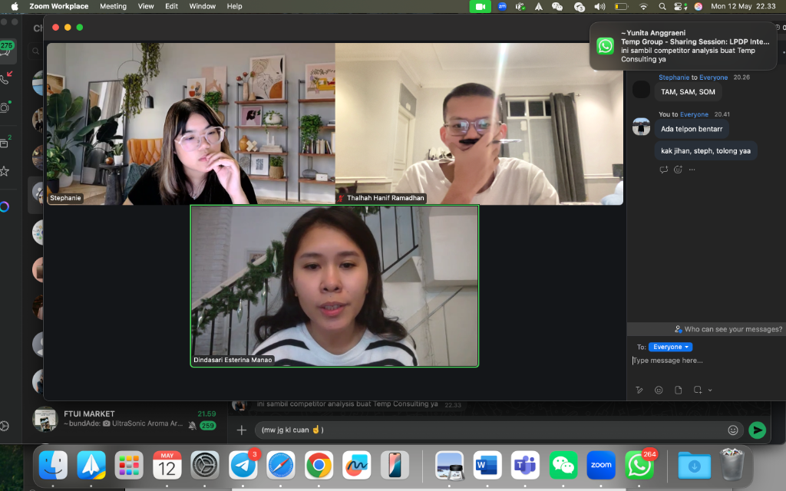
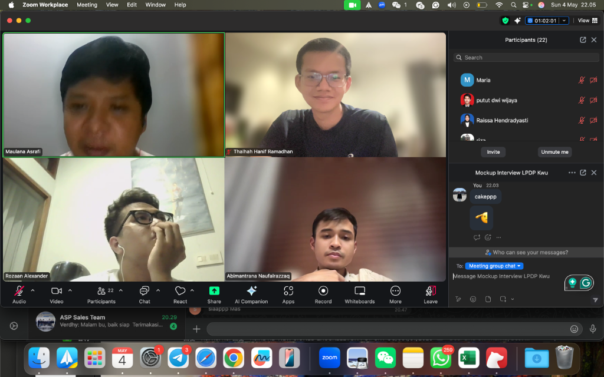
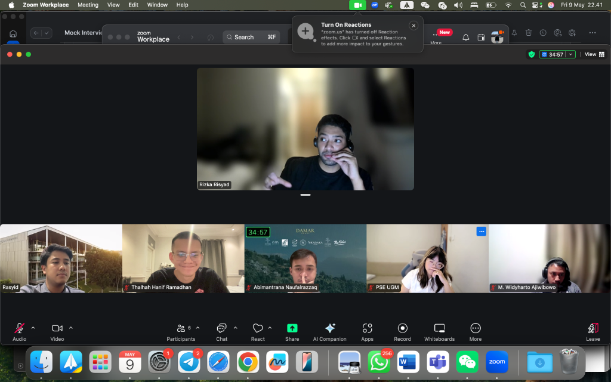

LPDP Entrepreneurs Scholarship Mentoring
A pro-bono mentoring community dedicated to supporting Indonesian scholarship recipients and aspiring young entrepreneurs on their journey from idea to execution.
Key figures
About LPDP
LPDP (Lembaga Pengelola Dana Pendidikan) is Indonesia's premier government scholarship fund, supporting thousands of Indonesian students pursuing graduate education natively and abroad. Many LPDP recipients aspire to entrepreneurship — but the transition from academic scholarship to building a business is a path with few guides.
The Origin Story
This initiative started very simply. I met my co-founder, Abimantrana Naufalrazzaq, in a Telegram group. Since there was limited clear information about the entrepreneurship track of the scholarship, we set out to find others who were in the same boat and figure it out together.

The rare occasion where we actually meet in person instead of staring at each other on Zoom.We offer free mock interviews and discussions with zero fees charged (strictly adhering to LPDP's policy). We strongly believe that helping the next generation of Indonesian entrepreneurs get their opportunities to study abroad and broaden their perspectives is a massive net positive for the country.
Impact & Growth
- 145+ Members: A high-trust, active community of aspiring and current founders
- 50+ Mock Interviews: Rigorous, honest feedback to prepare candidates for the real thing
- 20+ Success Cases: Our mentees are now attending top global MBA programs, including Chicago Booth, UCLA Anderson, IESE, Babson, Imperial, and UCL / London Business School.

"Wait, how big is your TAM again?"
Contemplating the meaning of product-market fit.
Late night grinds and lots of tough feedback.
The face you make when asked about your 5-year financial projections.Key Learnings
- The Evolution of Immediate Action: You can always start something new, as long as you capitalize on speed and the right opportunity window. What began merely as a study group rapidly transformed into a comprehensive community. Members now connect to not only prepare for their scholarships, but also tackle their GMATs, GREs, and even map out their next ventures. The community itself truly drives the direction.
- The Value of Diverse Intellectual Exchange: I spent hours listening to and learning from an incredibly diverse array of business proposals—from sustainable fashion and green energy to AI-first agencies. Receiving structured feedback out of these vast points of view is what strengthened everyone's applications.
- The Power of Contagious Ambition: The passion for entrepreneurship in Indonesia operates on another level altogether. Every applicant arriving at the table firmly believes they bring something distinctly interesting to the world. Witnessing that raw belief firsthand has been profoundly inspiring.